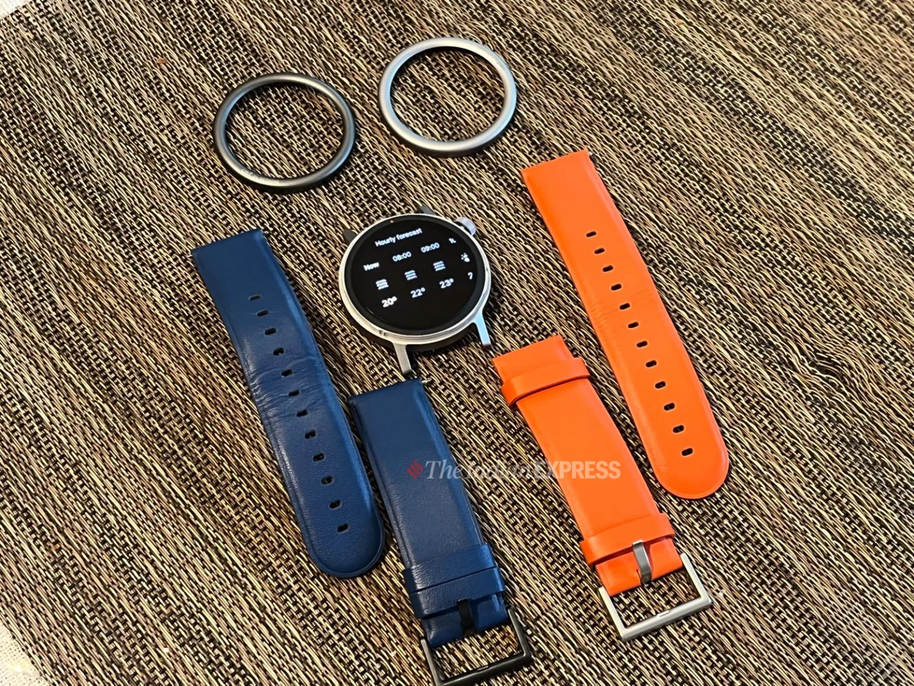

Nothing CMF Watch Pro 2 review: A fresh take on a budget smartwatch
Light, comfortable and good-looking, Nothing’s CMF Watch Pro 2 looks like a prop from a retro sci-fi movie yet holds its unique personality.
Rs. 54,999

I am a watch person, and collecting unusual watches is a part of who I am. I have come to love the history of old watches, and even though I can’t afford to buy classic ones, I find joy in looking at them up close in vintage stores. This, by any definition, doesn’t mean I have a disregard for smartwatches. For me, it’s all about the thrill of wearing a watch, but it needs to be totally original. Nothing’s new CMF Watch Pro 2 looks like a prop from a retro sci-fi movie yet holds its unique personality. I love the simplicity of it, the retro vibe looks great, and it didn’t cost a lot, either. It’s a watch that invokes the sentiments and the era I grew up in. Here’s my review.
Nothing CMF Watch Pro 2 price in India (as reviewed): Rs 5,499
Unboxing and design
This was a unique experience as the moment I opened the box, a waft of cool scent akin to sweet ocean mist hit the air. The cologne-like scent was refreshing and had stuck to the device for a few days. The box had the usual literature, a 125 W turbocharger with a Type C charging cable. The device comes in three shades of Forest Grey, Nordic Wood, and Peach Fuzz. Our review unit is the Nordic Wood edition
The CMF Watch Pro 2 comes with interchangeable bezels and bands. (Image Credit: Anuj Bhatia/Indian Express)